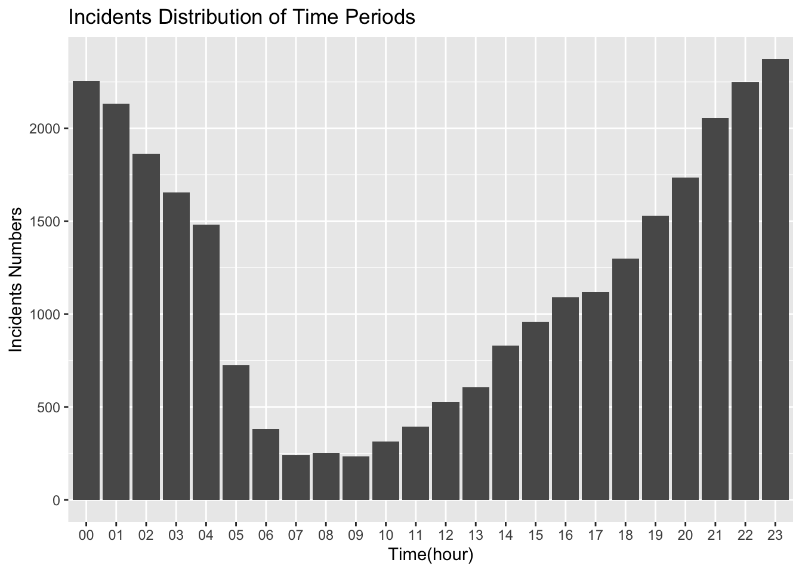
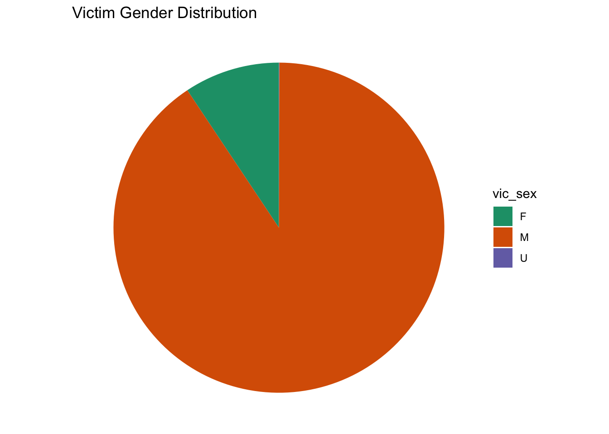
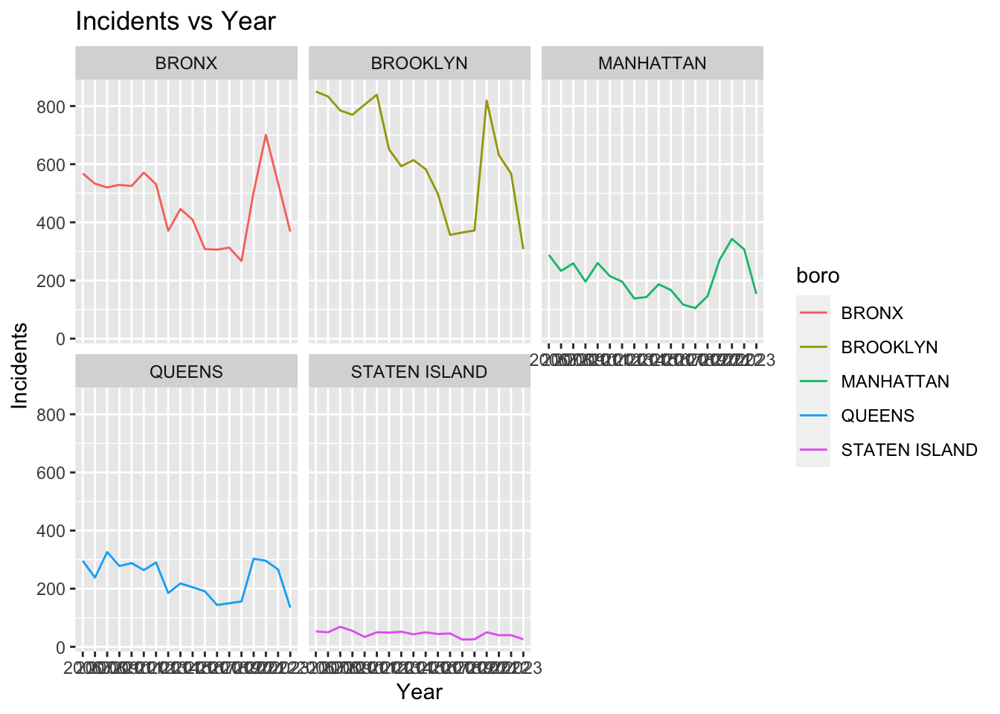
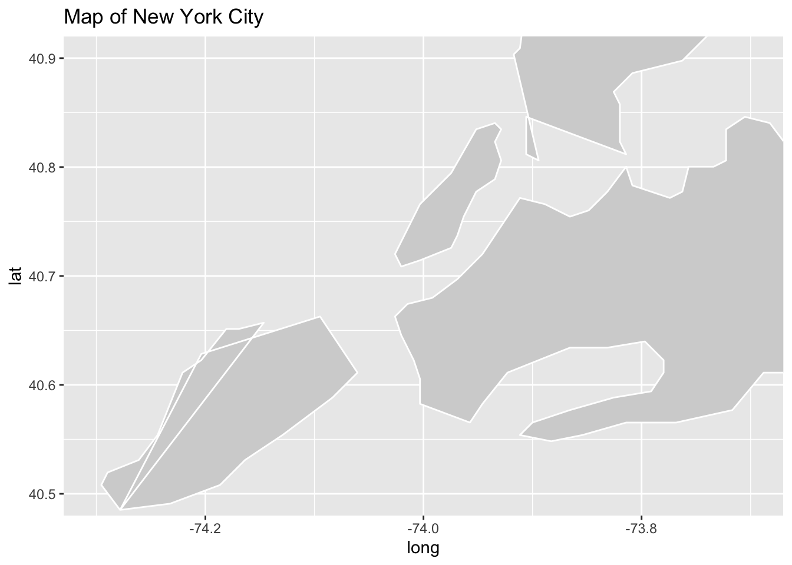
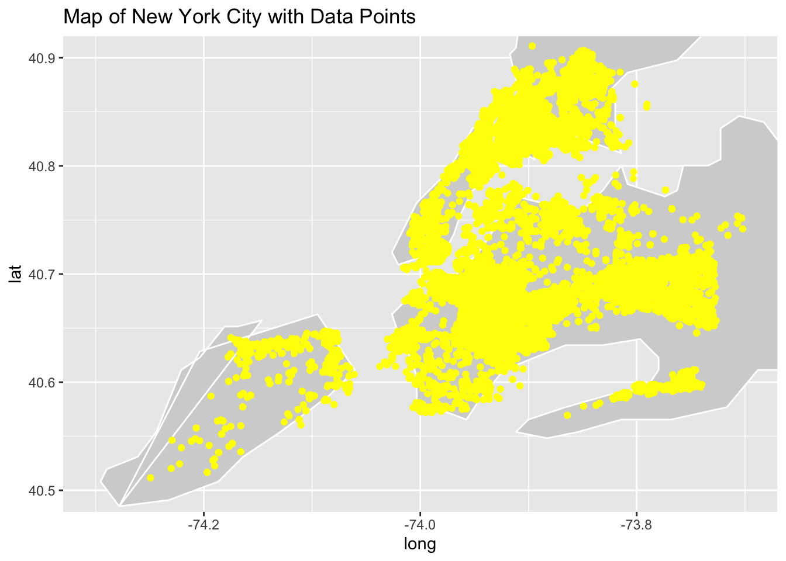
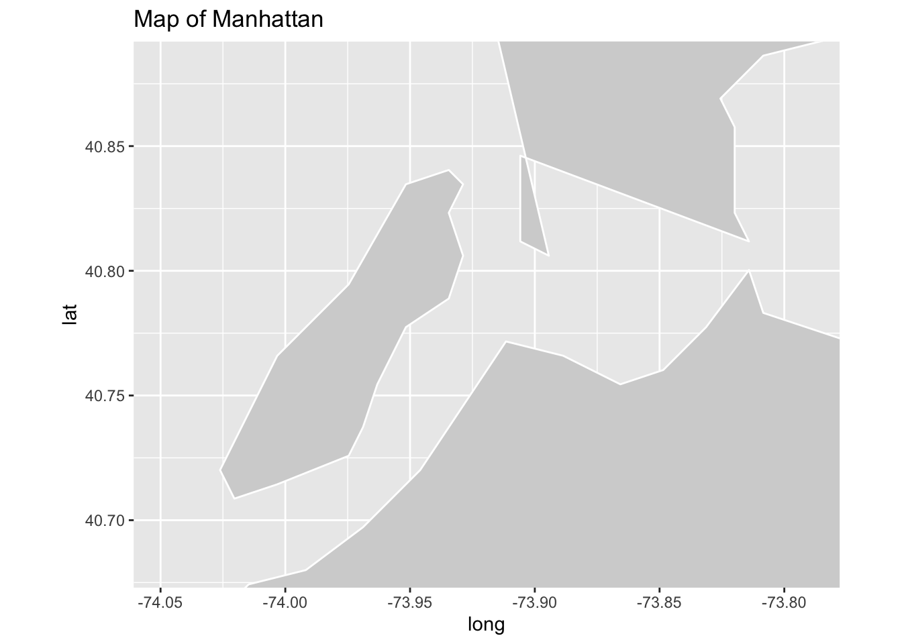
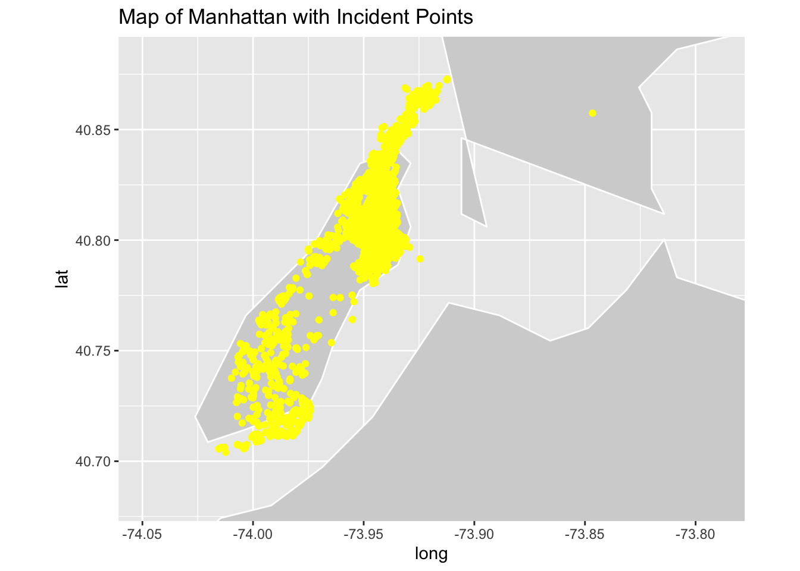

Visualization
Regarding time and victimization:
- Presents an analysis of the distribution of NYPD shooting incidents across different time periods. The focus is on understanding when these incidents are more likely to occur during the day.
#incidents rate against the time
incidents_time =
NYPD_Shooting_Incident_cleaned |>
mutate(hour = as.factor(hour)) |>
group_by(hour) |>
ggplot(aes(x = hour)) +
geom_bar() +
labs(x = "Time(hour)", y = "Incidents Numbers", title = "Incidents Distribution of Time Periods")
incidents_time
- In this plot, each bar represents a specific hour, and the height of the bar corresponds to the number of shooting incidents during that hour. The x-axis represents the time (hour), and the y-axis represents the count of incidents.
- From this plot, we can find that the majority of shooting incidents occur during the night, with the highest concentration observed between 21:00 and 23:00. Incidents are notably fewer during the daytime, reaching the lowest point from 7:00 to 9:00 PM. Incident numbers gradually increase throughout the day, reaching a peak during the late-night hours.
Regarding gender and victimization:
- This plot delves into the gender distribution of shooting victims, seeking to understand the gender disparities among individuals impacted by shooting incidents.
#victim gender pie chart
victim_gender =
NYPD_Shooting_Incident_cleaned |>
group_by(vic_sex) |>
distinct(incident_key) |>
summarise(count = n()) |>
mutate(cumulative = cumsum(count),
label_position = cumulative - (0.5 * count)) |>
ggplot(aes(x = "", y = count, fill = vic_sex)) +
geom_bar(width = 1, stat = "identity") +
coord_polar("y", start = 0) +
theme_void() +
scale_fill_brewer(palette = "Dark2") +
labs(title = "Victim Gender Distribution")
victim_gender 
- The plot reveals a substantial gender difference in victimization, with a significantly higher number of male victims compared to female victims. It effectively conveys the gender distribution, showcasing the magnitude of victimization for each gender category.
Regarding age and victimization:
- This plot investigates the age distribution of shooting victims, aiming to identify patterns and disparities across different age groups.
#victim age bar chart
victim_age =
NYPD_Shooting_Incident_cleaned |>
group_by(vic_age_group) |>
distinct(incident_key) |>
summarise(count = n()) |>
mutate(cumulative = cumsum(count),
label_position = cumulative - (0.5 * count)) |>
ggplot(aes(x = "", y = count, fill = vic_age_group)) +
geom_bar(width = 1, stat = "identity") +
coord_polar("y", start = 0) +
theme_void() +
scale_fill_brewer(palette = "Dark2") +
labs(title = "Age Distribution of Shooting Victims")
victim_age
- The plot highlights a significant disparity in victimization among various age groups.Victimization is notably concentrated among young people, with the age group between 25 and 44 experiencing the highest incidence of shooting incidents. There is an outlier at age 1022 observed in the dataset, and it may represent an anomaly or data entry error.
Regarding region and victimization:
- This plot examines the trends in shooting incidents over the years, with a focus on different boroughs in New York City. The analysis employs a line chart to visually represent the number of incidents in each borough across multiple years.
#incidents vs. year, seperated by borough
incidents_year =
NYPD_Shooting_Incident_cleaned |>
group_by(year, boro) |>
summarise(count = n(), .groups = "drop") |>
ggplot(aes(x = year, y = count, group = boro, color = boro)) +
geom_line() +
facet_wrap(~boro) +
labs(
title = "Incidents vs Year",
x = "Year",
y = "Incidents"
)
incidents_year
- The number of incidents in Bronx and Brooklyn has been maintained at a high level every year. The overall situation of Manhattan and Queens remains relatively low and stable. But all four borough showed significant declines in 2018-2019, and bounced back in the following year. Compared with other boroughs, Staten Island have the fewer amount of the incidents. The density of data points in Staten Island is significantly lower than in other regions.
Mapping
Mapping New York City
- To provide a more detailed and focused view of New York City, specific geographic limits were defined. The longitude and latitude boundaries were set as follows: Longitude: -74.3 to -73.7; Latitude: 40.5 to 40.9. These limits were chosen to encompass the central area of New York City, ensuring that the map primarily highlights the city itself.
# map
new_york_map <- map_data("state", region = "new york")
# Define limits to focus on New York City
lon_min <- -74.3
lon_max <- -73.7
lat_min <- 40.5
lat_max <- 40.9
ggplot() +
geom_polygon(data = new_york_map, aes(x = long, y = lat, group = group), fill = "lightgray", color = "white") +
coord_fixed(ratio = 1, xlim = c(lon_min, lon_max), ylim = c(lat_min, lat_max)) +
labs(title = "Map of New York City")
- The maps generated are called “New York City Maps” and effectively show the outlines of geographic areas with light gray fills and white borders.
Mapping New York City with NYPD Shooting Incident Data
ggplot() +
geom_polygon(data = new_york_map, aes(x = long, y = lat, group = group), fill = "lightgray", color = "white") +
geom_point(data = NYPD_Shooting_Incident_cleaned, aes(x = longitude, y = latitude), color = "yellow") +
coord_fixed(ratio = 1, xlim = c(lon_min, lon_max), ylim = c(lat_min, lat_max)) +
labs(title = "Map of New York City with Data Points")
- The map that resulted, entitled “Map of New York City with Data Points,” effective combines the geographic layout of the city with the specific locations of the shootings. The light gray background provides context for the map, while the yellow data points highlight the spatial distribution of shootings in New York City.
Mapping Manhattan
- In order to provide a detailed and centralized view of Manhattan, the map defines specific geographic constraints. The longitude and latitude boundaries are set as follows: Longitude: -74.0479 to -73.79067; Latitude: 40.6829 to 40.8820. These boundaries cover all of Manhattan, ensuring that the map primarily highlights the borough itself.
# map for Manhattan
manhattan_map <- map_data("state", region = "new york")
lon_min <- -74.0479
lon_max <- -73.79067
lat_min <- 40.6829
lat_max <- 40.8820
ggplot() +
geom_polygon(data = manhattan_map, aes(x = long, y = lat, group = group), fill = "lightgray", color = "white") +
coord_fixed(ratio = 1, xlim = c(lon_min, lon_max), ylim = c(lat_min, lat_max)) +
labs(title = "Map of Manhattan")
- Generates the “Manhattan Map” that effectively shows the outline of the geographic area with a light gray fill and white border.
Mapping Manhattan with NYPD Shooting Incident Data
manhattan =
NYPD_Shooting_Incident_cleaned |>
filter(boro == "MANHATTAN")
ggplot() +
geom_polygon(data = manhattan_map, aes(x = long, y = lat, group = group), fill = "lightgray", color = "white") +
geom_point(data = manhattan, aes(x = longitude, y = latitude), color = "yellow") +
coord_fixed(ratio = 1, xlim = c(lon_min, lon_max), ylim = c(lat_min, lat_max)) +
labs(title = "Map of Manhattan with Incident Points")
- “Manhattan Map with Event Points” effectively combines the geographic layout of Manhattan with the specific locations of shooting incidents. A light gray background provides context for the map, while yellow data points highlight the spatial distribution of shootings within the borough.